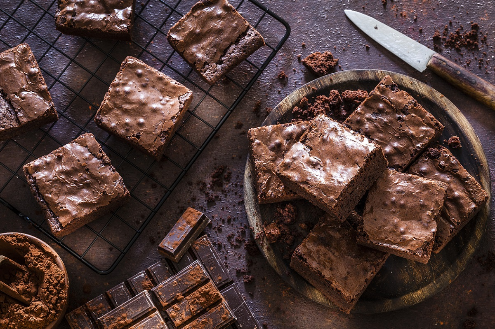

Brownie

Description
The brownie is a versatile and delicious dessert that's perfect for any occasion.
Whether you're craving a quick snack, an afternoon treat, or a grand finale to a special meal, a brownie is always a good choice.
Ingredients
- 6 heaped tablespoons of unsalted margarine
- 1/2 cup (tea) cocoa powder
- 2 cups (tea) sugar
- 2 pinches of salt
- 1 bar of semisweet chocolate, chopped into cubes
- 3/4 cup (tea) chocolate powder
- 1 and 1/4 cup (tea) wheat flour
- 4 eggs
- 1 teaspoon vanilla extract or essence
- 1/2 cup (tea) of chopped walnuts or granulated cashew nuts
Steps
- Mix the eggs and sugar.
- Then add all the other ingredients until you get a uniform cream.
- Pour into a baking tray lined with baking paper and bake in a medium oven for 40 minutes.
- The brownie is ready when the top is lightly browned and, when you insert a toothpick , it is slightly moist (due to the melted chocolate).
- Cut into squares while still warm and serve with a scoop of vanilla ice cream, or freeze in a freezer bag.
- To defrost, place the brownie on a dessert plate and heat in the microwave, on high power, for 1 minute.